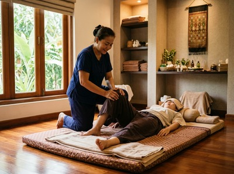

Glasgow City Centre is the commercial and cultural heart of Scotland's largest city, built on a distinctive grid of streets that stretches from George Square and the Merchant City in the east to Blythswood Hill and the financial district in the west.
Thai massage in Glasgow City Centre is not a commute away — for the tens of thousands of people who work, study, or live here, Serendipity Massage Therapy & Wellness is already on your doorstep, on Hope Street in the very middle of it all.
The city centre draws professionals from across the board. Solicitors and accountants from Blythswood Square. Finance workers from the International Financial Services District near St Vincent Street. Retail staff from Buchanan Street and Argyle Street.
Desk-bound work, long standing shifts, and the pressure of a demanding week take a real physical toll. Stiffness in the neck, tight shoulders, and persistent lower back pain are not inevitable — they respond well to skilled, regular massage therapy.

Serendipity Massage Therapy & Wellness sits at Central Chambers on Hope Street — one of the most central addresses in the city. Whether you have a lunch break to spare, an hour before your train home, or you are building a regular routine into your week, the location makes it easy to fit a session in. You can book your appointment online in advance and arrive knowing everything is ready for you.
The treatments at Serendipity cover both relaxation and therapeutic needs. Traditional Thai massage is a fully clothed technique that uses assisted stretching and targeted pressure along the body's energy lines. It works well for office workers carrying tension in the upper back, neck, and hips.
Thai oil massage uses slow, flowing strokes with therapeutic oils to ease muscle tension and encourage deep relaxation. Every treatment is delivered by a trained therapist using techniques developed by head therapist Jariya Malone — so the standard is consistent, whoever you are booked with.
From almost any point in Glasgow City Centre, Hope Street is a short walk. Glasgow Central Station is about one minute away, making Serendipity one of the easiest massage studios to reach in the city.
Buchanan Street subway station is around seven minutes on foot. Bus routes including the 1, 4, 6, and 18 all stop close by.
Walking from George Square or the Merchant City? Hope Street is a straightforward ten to twelve minute walk west along Argyle Street or Bath Street. From Blythswood Square or St Vincent Street, it is closer still. You can book your session online before you leave the office and arrive on time without any stress.
Serendipity is a professional team practice — not a sole trader, not a chain. Every therapist works to a consistent standard using techniques developed by Jariya Malone. Those techniques are rooted in traditional Thai massage and refined for precise, reliable results.
Many clients visit regularly as part of an ongoing health routine. This is not a one-off treat — it is how they manage their physical health week to week.
If you work in the city centre and have been putting off dealing with persistent tension or discomfort, a session at Serendipity is a practical next step. Reserve your appointment and give your body the attention it has been asking for.
Glasgow City Centre is the commercial, cultural, and historic core of one of the UK's most active cities — a concept explored further on City centre on Wikipedia. Glasgow's version stands out. Its grid street layout, the Victorian grandeur of George Square, and the concentration of financial, legal, and creative industries around Blythswood Hill make it one of the most architecturally rich city centres in Scotland.
Serendipity Massage Therapy & Wellness is at Floor 1, Suite 50, Central Chambers, 93 Hope Street, Glasgow G2 6LD. Hope Street runs through the heart of the city centre, directly next to Glasgow Central Station. It is one of the most central and easy-to-reach addresses in the city.
Glasgow Central Station is about one minute's walk from Hope Street. That makes Serendipity one of the most convenient massage studios in the city. Coming from Buchanan Street subway station? The walk takes around seven minutes heading south through the city centre grid.
Same-day appointments depend on availability, so booking ahead is always the best option. You can check availability and book quickly via the online booking page at serendipitymassage.co.uk. If you work or live in the city centre, it is easy to book a session for your lunch break or after work.
Traditional Thai massage works well for desk workers with neck pain, shoulder tension, and upper back stiffness. It uses assisted stretching and pressure — no oils — targeting the muscles most affected by long periods of sitting. Thai oil massage is a good option if you prefer a more flowing, deeply relaxing approach. Your therapist can help you choose when you book.
For current opening hours and live availability, check the booking page at serendipitymassage.co.uk or call the studio on 0141 673 6630. The Hope Street location is easy to reach before work, at lunch, and in the early evening for those with standard working hours.